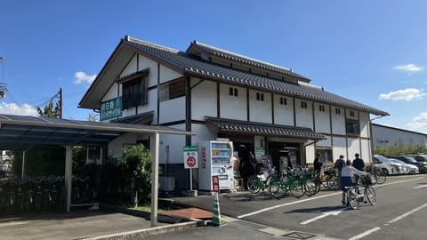
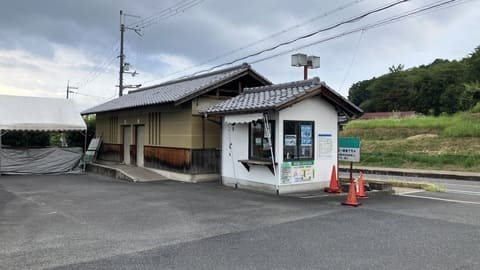
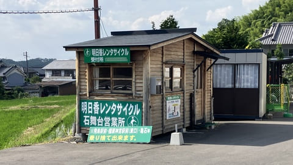
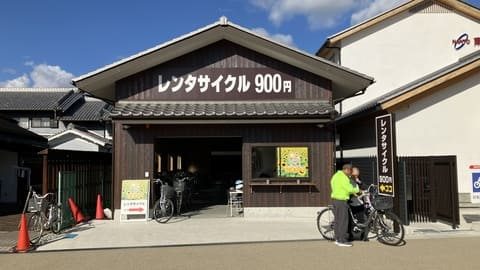
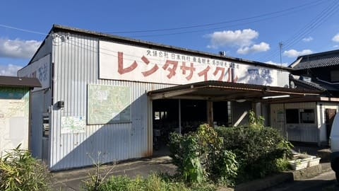
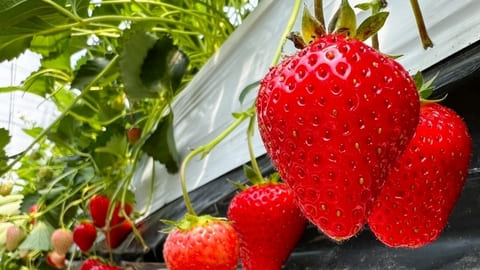
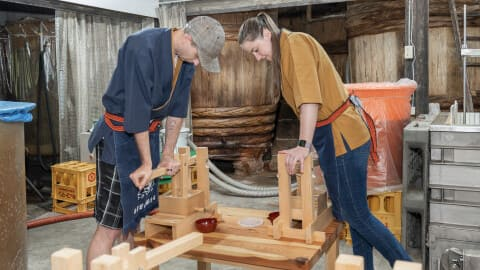
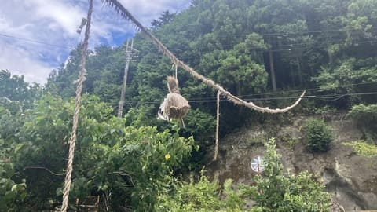

体験する
明日香村で楽しめる体験を一覧で紹介します。レンタサイクルで史跡をめぐるサイクリングのほか、いちご狩り、古代衣装、草木染め、醤油しぼり、写経などの体験や、綱掛祭・おんだ祭などの伝統行事、イベント情報まで。マイマップで場所を確認しながら、旅の予定に合う体験を探せます。
ご利用案内
※カードをクリックすると、マップ詳細位置に移動します。開催日・料金・申込方法は変更される場合があります。最新情報は公式ページでご確認ください。
レンタサイクル

1 明日香レンタサイクル 飛鳥駅前営業所
近鉄飛鳥駅前ロータリー内の営業所。電動アシスト自転車もあり、ほかの営業所へ乗り捨てもできます（別料金）。

2 明日香レンタサイクル 亀石営業所
亀石の近く、野口駐車場の敷地内にある営業所。車で来て借りることもできます。飛鳥駅や石舞台との中間にあたり、村内を回りやすい立地です。

3 明日香レンタサイクル 石舞台営業所
石舞台古墳の近くにある営業所。電動アシスト自転車もあり、ほかの営業所へ乗り捨てもできます（別料金）。

4 ひまわりレンタサイクル
近鉄飛鳥駅から近いレンタサイクル店。普通自転車のほか電動アシスト自転車も借りられます。

5 レンタサイクル万葉
近鉄飛鳥駅から近いレンタサイクル店。電動アシスト自転車も借りられます。
体験する

6 あすかいちご狩りぱーく
村内のいちご農園で、特産の「あすかルビー」を30分間食べ放題で楽しめます。高設栽培のハウスなので、立ったまま摘めます。今シーズンの受付は終了しました。

7 醤油しぼり体験（徳星醤油）
大正7年創業の徳星醤油で、蔵を見学したあと、熟成した諸味を木製の装置でしぼって瓶詰めします。しぼった醤油は持ち帰れます。
8 水谷草木染（草木染め体験）
明日香村の植物などを使い、昔ながらの手法で染色を体験できます。自然の色合いを楽しめます。
9 川原寺跡 弘福寺 写経体験
日本で初めて写経が行われた場所と伝わる川原寺跡で、写経と食事を楽しめます。
10 橘寺 写経体験
聖徳太子生誕の地と伝わる橘寺で、静かに写経に取り組む体験です。
1 sokoiko!明日香サイクリングツアー
地元ガイドと自転車で、飛鳥の史跡や田園風景を巡るサイクリングツアーです。
11 古代衣装体験
飛鳥時代の皇族や宮廷の人々をイメージした衣装を着て、記念撮影や史跡めぐりを楽しめます。
12 グリーンスローモビリティ歴史クルーズ
ガイドの解説を聞きながら、電気自動車で村内約5.8kmを巡る歴史クルーズです。小学生未満は乗車できません。
13 キトラ古墳周辺地区の団体プログラム
勾玉づくり、古代ガラス製作、海獣葡萄鏡みがき、絵師なりきり体験、ベンガラ染めなど、古代の技に触れる体験を開催しています。2026年の夏休みには勾玉づくり・海獣葡萄鏡みがき・絵師なりきり体験が行われました。
14 稲渕の棚田 棚田オーナー制度
「日本の棚田百選」に選ばれた稲渕の棚田で、1995年から続く棚田オーナー制度により田植えなどの米づくりに関われます。運営は地元のNPO法人「明日香の未来を創る会」で、4月のレンゲ祭りや11月の収穫祭などの交流行事もあります。
お祭り・伝統行事
15 飛鳥坐神社 おんだ祭
西日本三大奇祭のひとつ。天狗とお多福が演じる田植えの所作から夫婦和合の儀式までがユーモラスに繰り広げられ、五穀豊穣と子孫繁栄を祈ります。神事の前後には、ささらを持った翁や天狗が参拝者のお尻を叩いて魔よけをします。

1617 綱掛祭
飛鳥川の上流（栢森）の女綱と下流（稲渕）の男綱を、お正月の時期に新しく掛け替える伝統行事です。子孫繁栄や五穀豊穣を祈り、村に悪いものが入らないよう結界の役目を果たすとされます。
18 盟神探湯（くがたち）神事
煮えたぎる湯に手を入れて真偽を裁いたという古代の裁判を再現する神事です。参拝者は笹の葉を湯に浸し、無病息災を願います。
19 稲渕棚田案山子祭り
稲渕の棚田で開かれる案山子コンテストを中心としたお祭り。案山子ロードにテーマに沿った案山子が並び、来場者の投票で入賞作品が決まります。2025年に第30回を迎えました。主催に関わるのは地元のNPO法人「明日香の未来を創る会」です。
イベント
ハローキティ 飛鳥・藤原クイズラリー
「飛鳥・藤原の宮都」の構成資産などを巡るクイズラリー。スマホを使って楽しみながら飛鳥・藤原の歴史を満喫できます。
にぎわいフェスタ万葉
万葉文化館で季節ごとに開かれる催し。2026年の秋は9月15日〜11月29日に開催されます。
岡寺 紅葉ライトアップ「光の巡礼」
岡寺の境内を紅葉と光で彩る秋の夜間特別拝観。日程を確認して、夜の紅葉を楽しめます。
LINEでクイズ・スタンプラリー2026
国営飛鳥歴史公園と平城宮跡歴史公園をめぐるクイズ・スタンプラリー。スマホのLINEで参加でき、スタンプを集めると賞品が当たるチャンスがあります。
古都・飛鳥散歩 万葉歌碑巡り
万葉歌碑や世界遺産の構成資産などを巡るウォーキングイベント。電話での事前申込制です。
飛鳥資料館 ギャラリートーク
秋期特別展の展示室で、担当者による解説を聞けます。申込不要。別途入館料が必要です。
キトラ古墳周辺地区 12月の週末体験プログラム
キトラ古墳壁画体験館 四神の館で開催する週末体験。開催日ごとの内容・時間・申込方法は公式ページでご確認ください。
親子星空教室・望遠鏡工作教室
明日香村役場前で開催。望遠鏡工作と星空観察を親子で楽しめます。荒天時は中止です。
奈文研研究員と歩く飛鳥
奈良文化財研究所の研究員と、山田寺・飛鳥寺など飛鳥の遺跡を歩く催しです。申込受付は終了しています。
飛鳥・藤原クラシックカーフェスティバル2026
国内外のクラシックカーが明日香村役場の特設会場に集まるイベント。入場無料です。
世界遺産記念演奏会
世界遺産登録を記念して橘寺で行われる演奏会。開催内容の詳細は案内ページをご確認ください。
苔テラリウム〜小さな飛鳥をつくろう〜
キトラ古墳壁画体験館 四神の館で、小さな苔の景色を作る体験です。事前申込制です。
キトラの八百屋さん〜ダイコン収穫〜
キトラ古墳周辺地区の畑でダイコンを収穫する体験。現地受付で参加でき、収穫したダイコンは1本100円です。
飛鳥資料館 ギャラリートーク
秋期特別展の展示室で、担当者による解説を聞けます。申込不要。別途入館料が必要です。
飛鳥を歩く。飛鳥を味わう。（第2回〜第4回）
飛鳥の歴史ある景観を歩きながら、吉野本葛などの特産品や味わいを楽しむウォーキング＆グルメ企画です。
岡寺 納観音
一年の観音信仰を締めくくる岡寺の年中行事。法要・火難除けの祈願が行われます。
古墳ケーキ de クリスマス
キトラ古墳壁画体験館 四神の館で、古墳をモチーフにしたケーキ作りを楽しむ体験です。事前申込制です。
古代ガラス製作体験
キトラ古墳周辺地区の体験工房で、飛鳥時代のガラスづくりを再現し、古代ガラスのアクセサリーづくりを体験します。申込受付は終了しています。
キトラの畑しごと〜お正月準備 しめ縄づくり〜
キトラの田んぼで収穫した古代稲でしめ縄をつくる体験。体験後は古代米のおにぎりを試食できます。電話での事前申込制（申込期間：12月1日〜24日）です。
岡寺 大晦日・除夜の鐘
一年の締めくくりに岡寺で行われる除夜の鐘。年越しの参拝とともに新年を迎えられます。